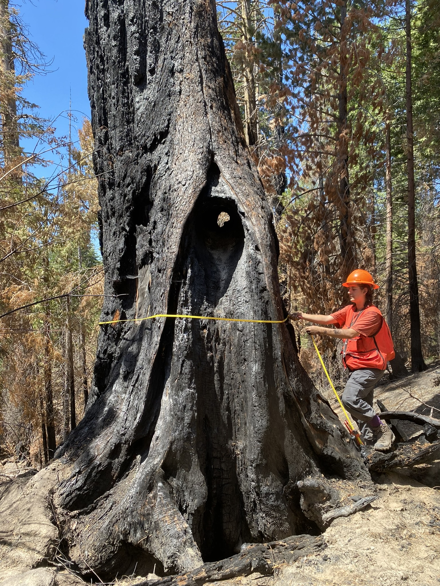
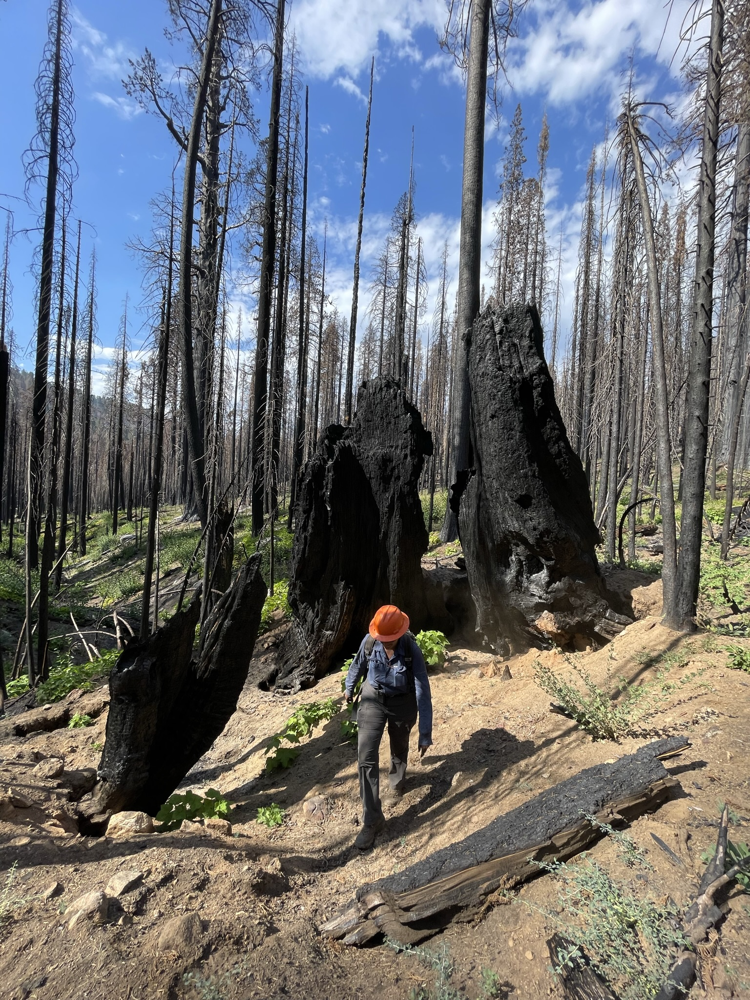

SOUTHERN SIERRA FIELD CREW LEAD-ASSISTANT UC DAVIS / USFS
 In the summer of 2022, I worked as a field ecologist, conducting habitat surveys and collecting data on post-fire ecosystem
recovery and insect-induced tree mortality across National Parks, Forests, and Monuments in the Sierra Nevada. Despite being
new to fieldwork, I stepped into the Assistant Lead role following an injury to our crew lead, demonstrating adaptability,
dedication, and leadership.
In the summer of 2022, I worked as a field ecologist, conducting habitat surveys and collecting data on post-fire ecosystem
recovery and insect-induced tree mortality across National Parks, Forests, and Monuments in the Sierra Nevada. Despite being
new to fieldwork, I stepped into the Assistant Lead role following an injury to our crew lead, demonstrating adaptability,
dedication, and leadership.
POSITION DETAILS
Throughout the season, we surveyed sites across the Southern Sierra Nevada, including Sequoia National Park, Sequoia National Forest, Kings Canyon National Park, Giant Sequoia National Monument, and Inyo National Forest. I assisted in identifying trees and plant species, and collected measurements of forest stand structure (tree density, basal area, canopy cover). I also collected data related to overstory health and seedling/sapling cover. Our work covered over 100 plots in five sequoia groves and three mixed pine stands, allowing me to develop expertise in various measurement instruments and protocols. Teamwork and communication were critical for safety and data accuracy. Our eight day backcountry camping stints involved hiking through rugged, post-wildfire terrain. These off-the-grid conditions refined my wilderness first aid, navigation, and makeshifting skills. As Assistant Lead, I played a significant role in protocol modifications, training team members, managing gear inventory, and data form design. I also coordinated weekly datatransfers to our lead scientists/contacts at UC Davis and the USFS. I often led the crew to and from plots, navigating with Garmin GPS devices and sometimes relying on memory, a compass, and my sense of direction.  The data we collected contributed to studies investigating the impact of fire on giant sequoia groves and post-fire recovery, with the goal of improving our understanding of fire management and enhancing the application of prescribed fire for ecological benefits.